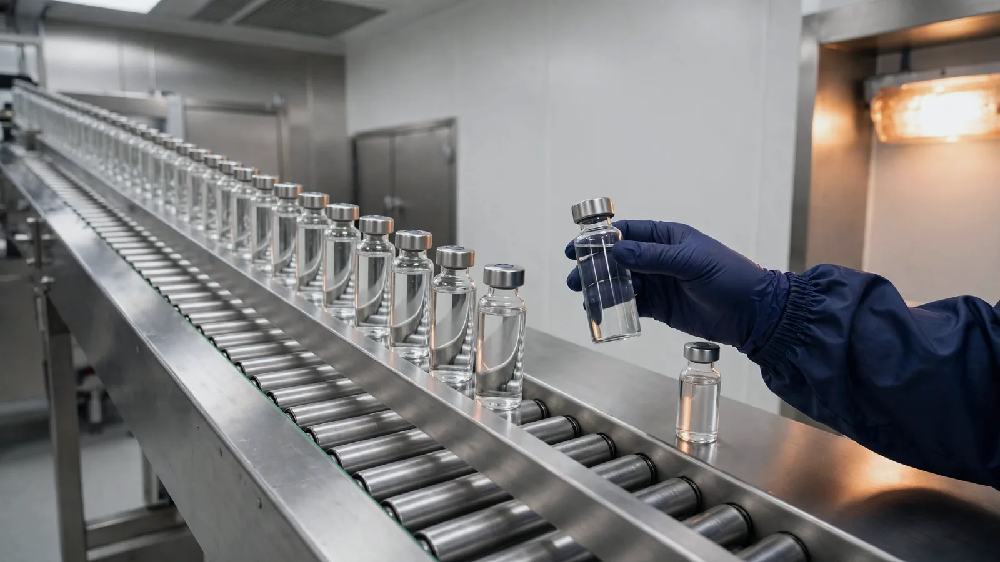

Before a deviation investigation can be planned, the deviation has to be classified as critical, major or minor. The classification determines the depth of the investigation, the level of QA approval, the timelines and whether a CAPA is required. This guide explains what each classification means in plain terms, who should propose and confirm it, and when it should change, and it separates a site’s own classification from the grades inspectors give their findings.
What deviation classification in GMP decides
The classification should be decided at the start of the deviation management process, because it determines the level of effort and oversight that the deviation receives.
- Investigation depth. EU GMP asks that an appropriate level of root cause analysis is applied when deviations are investigated, and says that level can be determined using quality risk management principles. More generally, the effort, formality and documentation of quality risk management should be commensurate with the level of risk.
- Who signs off. Most SOPs ask for a more senior QA approver for higher classifications.
- Timelines. Each site sets its own targets in its SOP; GMP does not give a fixed number of days.
- CAPA. Many SOPs require a CAPA for critical and major deviations and leave minor ones to judgement.
- The batch. Under Annex 16, the Qualified Person certifying a batch should be aware of and take into consideration any deviations which have the potential to impact compliance with GMP or the marketing authorisation. The classification is often what decides how quickly that information reaches the QP. For more on that side of the work, see what takes a Qualified Person’s time at batch release.
Critical, major and minor: the three classifications in plain terms
The usual GMP deviation definition is a departure from an approved instruction, procedure or standard. The classification then says how serious that departure is. Most deviation management SOPs use three classifications. The definitions vary from site to site, but they are usually based on patient safety, product quality and data integrity.
| Classification: what it usually means | What usually follows |
|---|---|
| Critical: the event has harmed, or could plausibly harm, a patient, or it puts the integrity of GMP data in serious doubt | Immediate containment, senior QA and QP involvement, a full root cause investigation and a CAPA |
| Major: the event could affect product quality or compliance with the marketing authorisation, but without a likely risk to the patient | A documented investigation, QA approval and, in most SOPs, a CAPA |
| Minor: a departure from a procedure with no realistic impact on product quality, patient safety or data | A recorded assessment and correction; a CAPA only if the event recurs or forms a pattern |
The same type of event can be classified differently depending on its context. A missed signature on a cleaning log is usually minor; the same gap on a record that supports the release of a sterile batch may not be. For this reason, a fixed list of examples should not be used as a set of rules.
Some SOPs add a lower tier, often called an incident, for events assessed as having no GMP impact at all. Planned departures do not belong in this scale either: they go through change control as temporary changes, as explained in the post on planned and unplanned deviations.
Inspection deficiency grades are not the same as your deviation classification
Inspectors classify their findings, and many deviation SOPs use the same terms. However, the two schemes serve different purposes.
The PIC/S guidance on classification of GMP deficiencies (PI 040-1, 1 January 2019) defines three grades for inspection findings.
- Critical: a deficiency which has produced, or leads to a significant risk of producing, a product which is harmful to the patient. Fraud, misrepresentation or falsification of products or data is also critical.
- Major: a non-critical deficiency which, for example, has produced or may produce a product that does not comply with its marketing authorisation, or indicates a failure to carry out satisfactory batch release procedures.
- Other: a departure from GMP that is neither critical nor major, or where there is not enough information to classify it as critical or major.
The MHRA uses the same three grades for deficiencies found at its GMP and GDP inspections.
Two differences matter for a site. First, the inspector’s lowest grade is “other”, not “minor”, and it can be a holding grade when information is missing. Second, an inspection finding usually describes a weakness in the quality system, while a site deviation describes one event. A single minor deviation is unlikely to concern an inspector, but a pattern of minor deviations that are poorly managed can result in a major finding. Sites can use the same terms as inspectors, but applying inspection thresholds to every site event can lead to classifications being set too high or too low.
Who classifies a deviation, and when
The person who raises the deviation, or the deviation owner, proposes a classification at the initial assessment. QA confirms it. The SOP should name both roles, so that the decision does not depend on which staff are on shift.
The timing of the classification is also important. The classification should be proposed before the investigation plan is written, so that the scope of the plan reflects it. If a deviation is classified only after it has been investigated, there is a risk that the classification is chosen to fit the investigation that was carried out.
Record both steps: the proposed classification, with the name and date, and the confirmed classification, with the QA approver’s name and date. Where they differ, record why.
The open letter that launched Inglasia Intuitor names a problem many Quality teams will recognise: staff who have been trained on the SOP but still do not know how to raise a deviation in real life. Clear roles and a few fixed questions at the initial assessment help with that.
The questions behind the classification: patient, product, data, scope and recurrence
To classify deviations consistently, the same questions should be asked in the same order each time.
The same questions, in the same order
Five questions behind every classification
- PatientCould the event harm a patient, through the product that was made or released?
- ProductIs a specification, a registered requirement or a validated condition affected?
- DataIs the integrity of any GMP record in doubt?
- ScopeHow many batches, products, lines or sites could be affected?
- RecurrenceHas the same thing happened before?
The answer to the recurrence question alone can change the classification. If a deviation has occurred several times, it should no longer be treated as an isolated event, and a repeated minor deviation can justify a major classification. The PIC/S guidance treats repeat or recurring deficiencies, grouped deficiencies and product risk as reasons to raise an inspection finding’s initial classification. The same approach can be applied to a site’s own deviations.
When a deviation’s classification changes
A classification can be raised or lowered as the investigation identifies more information. It can go up when the scope turns out wider, when a patient risk is found, or when the event proves to be a repeat. It can go down when the impact is ruled out with evidence, such as test results, a batch record review or a data check.
PIC/S describes the same approach for inspectors: an initial classification is upgraded, maintained or downgraded according to factors that increase or reduce the risk.
Every change needs a reason, a name and a date, and the original classification should stay visible in the record. For electronic records, EU GMP Annex 11 says, in its section on audit trails, that for a change or deletion of GMP-relevant data the reason should be documented. Inspectors are most likely to question a downgrade that is not supported by evidence.
What to record with the classification
| Field | Why it matters |
|---|---|
| Proposed classification, with name and date | Shows who made the first call, and when |
| Confirmed classification, with QA name and date | Shows that QA owned the decision |
| Rationale against the five questions | Lets a reviewer, the QP or an inspector follow the reasoning |
| Batches, products and sites affected | Fixes the scope the classification applies to |
| Linked CAPA, for critical and major deviations | Shows the deviation led to action |
| Reclassification history, with reasons | Shows how and why the decision changed |
In the United States, 21 CFR 211.192 asks that an unexplained discrepancy is thoroughly investigated, that the investigation extends to other batches that may be associated with it, and that a written record of the investigation includes the conclusions and follow-up. The scope and rationale fields above form the start of that record.
What to look for in a deviation system
These controls are most effective when the deviation system enforces them. When a Quality team assesses a deviation system, the following questions should be considered:
- Does it require a rationale before a classification can be saved?
- Can QA confirm or change the proposed classification before the investigation plan is approved?
- Is every reclassification recorded with a reason, with the original still visible in the audit trail?
- Does it link critical and major deviations to a CAPA?
- Can it show the same deviation recurring across batches, lines and sites?
In Inglasia Intuitor™, the Deviations module has step-based guided forms, sequential numbering reserved at submission, never wasted on abandoned drafts, and recurrence intelligence across sites. Read more about the Deviations module.
Frequently asked questions
What are the three deviation classifications in GMP?
Most deviation management SOPs use critical, major and minor. Critical usually means the event has harmed, or could plausibly harm, a patient, or puts the integrity of GMP data in serious doubt. Major means it could affect product quality or compliance with the marketing authorisation, without a likely risk to the patient. Minor is a departure from a procedure with no realistic impact on product quality, patient safety or data.
Who classifies a deviation, and when?
The person who raises the deviation, or the deviation owner, proposes a classification at the initial assessment, and QA confirms it. The classification should be proposed before the investigation plan is written, so that the scope of the plan reflects it.
Can a deviation’s classification be changed?
Yes. A classification can be raised when the scope proves to be wider, a patient risk is found or the event proves to be a repeat, and lowered when the impact is ruled out with evidence. Every change needs a reason, a name and a date, and the original classification should stay visible in the record.
Are inspection deficiency grades the same as deviation classification?
No. The PIC/S guidance on classification of GMP deficiencies grades inspection findings as critical, major or other, and the MHRA uses the same three grades. An inspection finding usually describes a weakness in the quality system, while a site deviation describes one event.
The short version
Deviations should be classified early, with a recorded rationale, and reviewed as the investigation progresses. When a classification is proposed, confirmed and changed transparently, the QP and inspectors can follow the reasoning.
More posts for Quality teams are on the blogs page.
If you would like a free demonstration of the system, please contact us using the below link.
Contact — Inglasia Intuitor™